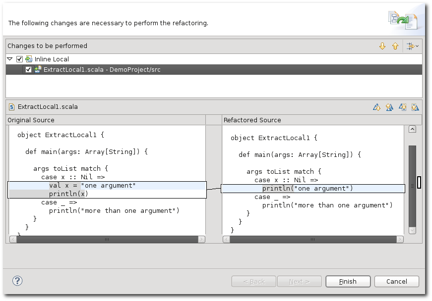

The Inline Local refactoring lets you remove unneeded local values. Selecting a value and invoking the refactoring will replace all references to the value with the value's right hand side.
Note that when there are side-effects in the evaluation of the value, the refactoring might change you program's behavior. Only local vals can be inlined, vars are not supported.
The following screenshot shows the refactoring in action:
